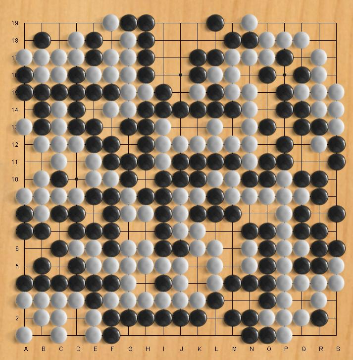

Go
Go isn't just an abstract strategy game, Go is the abstract
strategy game. It has been played in more or less it's
present form for almost 2000 years. It's played all over the
world; but primarily in Japan China and Korea.
The rules of Go are simple;
- Black and White alternate placing a stone,
anywhere on the board, or you can pass.
- Groups of stones that are connected horizontally or
vertically form a group.
- A group which has no empty spaces adjacent is removed.
- It's not allowed to repeat a position (most commonly,
a simple capture/recapture loop called Ko)
- The game ends when both players pass.
The goal of the game is to occupy or surround more of the board than
your opponent.
Beginners tend confused by Go because as customarily played
moves that are obvious to both players do not need to be actually
played. The game at the right is over - although there are
still lots of places to play, and lots of threats and counter threats
are still available. Experienced players understand all about
this and instead of playing dozens (or even a hundred!) meaningless
moves at the end of the game, they use one of several customary methods
to calculate the score.
The important thing for novice players to understand is that if you
don't agree with your opponent's assessment of the game, you just keep
playing.
Getting Started: It's really
important to play with a more experienced player who will be patient
and explain things until you have the gist of the game. Go is
a game you will probably never master, but will always enjoy.
Robots:
Go may have fallen to the robot overlords, but the technology hasn't
trickled down to me yet. There's no robot for Go here.
|

|